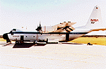

The BOREAS Information System
The BOREAS Information System
Remote Sensing Science (RSS)
RSS-12: Aerosol Determinations and Atmospheric Correction for BOREAS Imagery
P.I.(s): Michael A. Spanner -- NASA/Ames Research Center
Co-I(s): Robert E. Slye, Philip B. Russell, Gerald P. Livingston -- NASA/ARC
Objectives: For this study, we are:
- Acquiring sun photometer data using a ground-based instrument as well as the Airborne Tracking Sun Photometer on the C-130. Deriving aerosol optical depths as a function of wave length and submit them to BORIS.
- Using the spectral aerosol optical depths to derive aerosol and size distributions coincident with important BOREAS remote sensing data sets and using the size distributions to calculate aerosol optical properties such as phase functions and single scattering albedos necessary for our atmospheric correction model.
- Incorporating a model of contribution of skylight into our atmospheric correction model to enable calculation of surface reflectances from our surface radiances.
- Extending our atmospheric correction model to data collected by the Advanced Solid-state Array Spectroradiometer (ASAS), incorporating an approximate Rayleigh multiple scattering correction, and provide a detailed evaluation of the results.
- Processing the important remote sensing data sets for BOREAS from the Thematic Mapper (TM), the TM Simulator, System Probatoire de la Terre (SPOT), and ASAS.
Our effort will provide critical atmospheric optical measurements and derive the aerosol optical properties necessary for atmospheric correction of BOREAS data, extend our atmospheric correction model, and provide atmospherically corrected data for BOREAS.
RSS-12 Pictures
 The NASA C-130
RSS-12 Data Sets
Optical Thickness (ground)
Optical Thickness (C-130)
Get some RSS-12 data using FTP (BOREAS Investigators only, password required). [FTP Help]
Click on a team designation to go to that page.
RSS Overview || RSS-1 | RSS-2 | RSS-3 | RSS-4 | RSS-5 | RSS-6 | RSS-7 | RSS-8 | RSS-9 | RSS-10
RSS-11 | RSS-12 | RSS-13 | RSS-14 | RSS-15 | RSS-16 | RSS-17 | RSS-18 | RSS-19 | RSS-20
 Send a data request to the BOREAS Data Manager (BOREAS Investigators only)
Send a data request to the BOREAS Data Manager (BOREAS Investigators only)
E-Mail a comment on this page to the curator 
Send e-mail to Jaime Nickeson, the BORIS representative for the RSS group
Return to the RSS Overview
Return to the BOREAS Science Groups Overview
Return to the BOREAS Home Page
Last Updated: October 27, 1997
{kind=link}